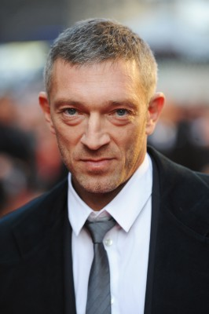
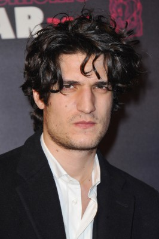
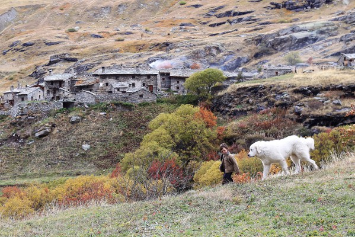
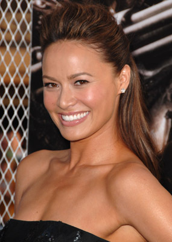

#4046 Mein ein, mein alles
Alternativ: My King (Englischer Titel)

 IMDB-Wertung: 7.0 / 10
IMDB-Wertung: 7.0 / 10  Metascore: 0
Metascore: 0 
Eigentlich sollte es nur ein erholsamer Winterurlaub werden, doch als Tony (Emmanuelle Bercot) in einen schweren Skiunfall verwickelt wird, muss sie mit schlimmen Verletzungen in ein Reha-Zentrum eingeliefert werden. Dort ist sie auf das medizinische Personal und die Schmerzmittel angewiesen, um das Laufen neu zu erlernen. Während des mühsamen Prozesses bleibt der jungen Frau auch viel Zeit, um über sich und ihr bisheriges Leben nachzudenken. Dabei kreisen ihre Gedanken vor allem um die vergangene leidenschaftliche Beziehung mit dem temperamentvollen Georgio (Vincent Cassel). Auf die gemeinsame Zeit zurückblickend, in der sie sich zunehmend erstickenden und zerstörerischen Einflüssen ausgesetzt sah, kommt Tony unweigerlich die Frage in den Sinn, wer Georgio überhaupt ist und warum sie sich eigentlich in ihn verliebt hatte. So beginnt für sie nicht nur ein körperlicher, sondern auch ein innerlicher Heilungsprozess, der jedoch nicht spurlos an ihr vorübergehen wird.
Jahr: 2015
Dauer: 124 Minuten
FSK: 12
Land: Frankreich Studio: StudioCanalTonspuren:
Untertitel: Deutsch,
Auflösung: 1080p (1920x800) Größe: 4935 MB
Genre: Drama, Liebe
Regisseur: Maïwenn
Drehbuch: Travis Milloy
Soundtrack:
Darsteller:
-  Vincent Cassel als Georgio Milevski
- Emmanuelle Bercot als Marie-Antoinette Jézéquel, dite Tony
-  Louis Garrel als Solal
- Isild Le Besco als Babeth
- Chrystèle Saint Louis Augustin als Agnès
-  Félix Bossuet als Simbad enfant
-  Moon Bloodgood als Nico
- Estelle Tolstoukine als La psychanalyste du centre
- Patrick Raynal als Denis Jézéquel
- Yann Goven als Jean
- Paul Hamy als Pascal
- Djemel Barek als Djemel
- Slim El Hedli als Slim
- Lionnel Desruelles als Lionel
- Laetitia Dosch als Lila
- Giovanni Pucci als Simbad 3 ans
- Milagros Schmoll als Milagros
- Michael Evans als Frédéric
- Vincent Nemeth als Le pédopsychiatre
- Hervé Temime als Maître Bouvet
- David Van Der Beken als Avocat Georgio
- Patrick Peyromaure als L'obstétricien
- Dani als Dame mystérieuse mariage
- Michelle Gomez als Christina
- Jean-Louis Hauguel als L'huissier
- Alain Beigel als Christian, l'ami à la pharmacie
- Alexis Bacquet als Le curé
- Vincent Colombe als Le pharmacien
- Thibaut Evrard als Pompier Tony
- Aymeric Dapsence als Pompier Agnès
- Manon Rony als Vendeuse meubles bébé
- Olivier Collin du Bocage als Commissaire-priseur
- Lola Norda als Standarsiste Tony
- François-Marie Banier als Le maire
- Géraldine Bintein als Infirmière prénom
- Elise de Beer als Maîtresse d'école Simbad
- Frédérique Giffard als Avocate Tony
- Antoine Aussedat als Secrétaire conférence
- Romain Sandère als Chef cuistot
- Alexandre Braun als Secrétaire conférence
- Ambroise Colombani als Secrétaire conférence
- Constance Debré als Secrétaire conférence
- Sabrina Goldman als Secrétaire conférence
- Delphine Jaafar als Secrétaire conférence
- Florian Lastelle als Secrétaire conférence
- Xavier Nogueras als Secrétaire conférence
- Charlotte Plantin als Secrétaire conférence
- Emmanuelle Ronna als Secrétaire conférence
- Olivier Savelli als Secrétaire conférence
- Emma Sultan als Secrétaire conférence
Datei: X:\2015(G-M)\Mein ein, mein alles (2015, FSK, 1920x800).mkv seit 15.07.2016
Festplatte: HD 2015(A-Z)
 Es gibt insgesamt 129 Filme in der Gruppe '2015(G-M)'
Es gibt insgesamt 129 Filme in der Gruppe '2015(G-M)'